05 / FIELD LIBRARY
Find your role.
Build your knowledge.
Original CBMC loadouts, organised for the next step. Choose a class or vehicle, inspect the reference images, then check your options in the current game.
LOADOUTS / ORIGINAL REFERENCES
Choose your platform.
21 platforms
Archive, not a current-patch recommendation.
Infiltrator
Recon, terminals & flanking
Light Assault
Rooftops & demolition
Combat Medic
Revives & point support
Engineer
Repairs, fortification & driving
Heavy Assault
Close-quarters pressure
MAX
Infantry, armour & air defence
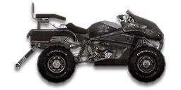
Flash
Cloak attacks & medic support
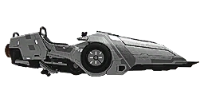
Javelin
Mobile medic triage
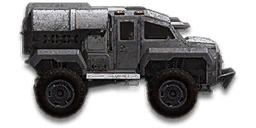
ANT
Construction platform
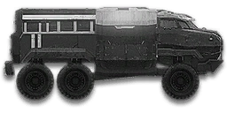
Sunderer
Squad logistics
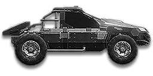
Harasser
Fast vehicle teamwork
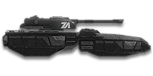
Lightning
Light armour
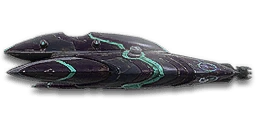
Magrider
Vanu armour
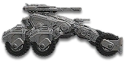
Chimera
Combined-arms armour
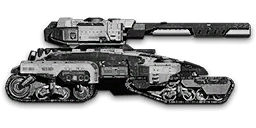
Colossus
Heavy armour & mobile spawns
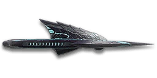
Scythe
Air & ground attack
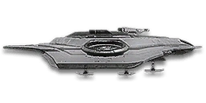
Dervish / Pizza
Air & ground loadout references
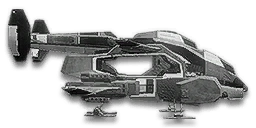
Valkyrie
Squad transport
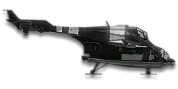
Liberator
Heavy air support
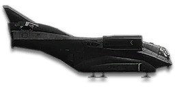
Galaxy
Airborne logistics
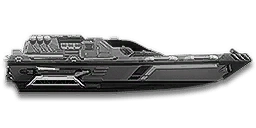
Corsair
Waterborne operations
No matching platform.
Try another word or reset the filters to see every role.
Squad beacons ↗
An illustrated placement checklist.
START HERE / 02Redeploy practice ↗
Learn the move-together habit.